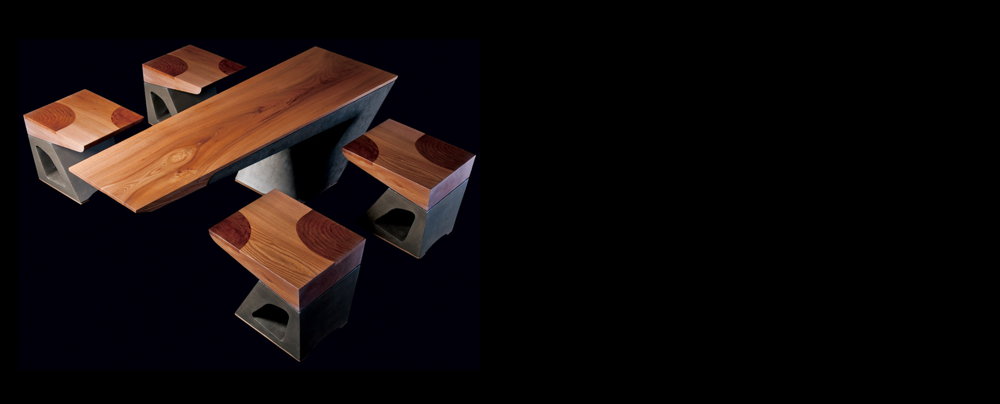
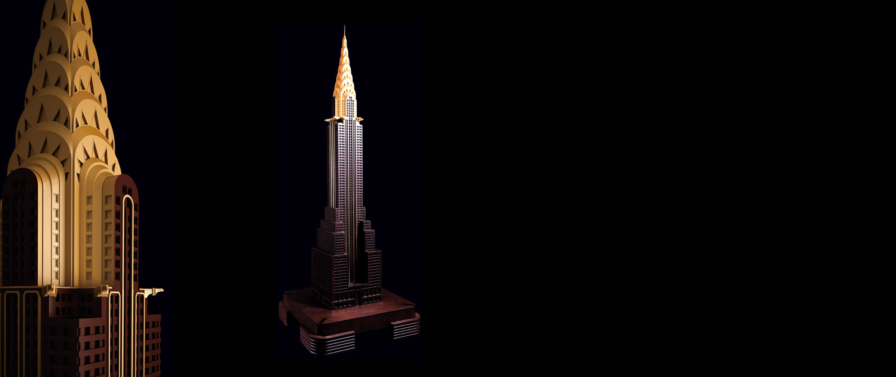

建筑
-

[“Zhi Ji ” – Earth]
“Zhi Ji” is one of “Minaxdo-Architecture” furniture series. Using the agile and bright structure lines of the modern building for reference, it adds a hearty and hale stroke for living or office space. The material quality brings the challenge to gravity with the strength and flexibility of concrete; the delicate and soft wood and the rough sands present an interesting contrast. The earth of the five elements(metal, wood, water, fire and earth)implies the meaning of kindness and sincerity and faithfulness, steady and solid, best suits the demand of steadiness for constructions.Size W×D×H（mm）
1500×450×455 400×350×350
Material
Teak Rosewood
-

[Chrysler Building]
Built in 1930s, Chrysler Building is till the tallest brick building in the world to this day, also one of the famous landmarks in New York. The seven terraced arches of the building are constructed into finials rising to the sky, the long narrow triangles inlayed radial patterns, presenting a radiating sunburst visual effect. It is regarded as a classic example of Art Deco architecture for its highly sculptured shape. With rare timber, Minaxdo carved the main body of the building with the proportion of 1:250. The façade is inlayed with fine metal wires and the top is decorated with gold color.Size W×D×H（mm）
660×660×1750
Material
Teak Rosewood